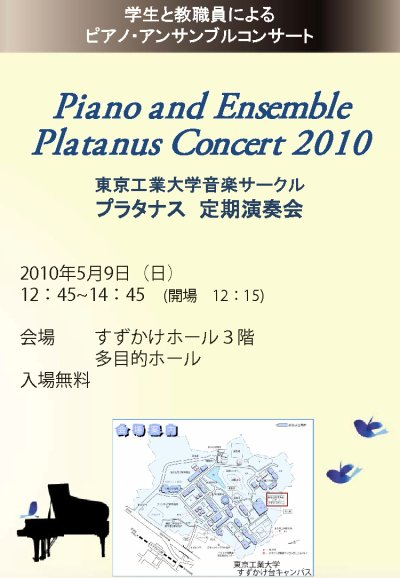

すずかけ祭
日時
2010年5月9日 (日)
12:15開場、12:45開演
場所
すずかけホール3階 多目的ホール
曲目
風紋 （江口貴勅）
ピアノ協奏曲第1番 蠍火 （Virkato Wakhmaninov）
バラード第3番 （ショパン）
ピアノ3重奏第7番”大公”第1楽章 （ベートーヴェン）
A Whole New World （Alan Menken）
愛の夢 第3番 （リスト）
トリオソナタG-dur BWV1039 （バッハ）
ピアノソナタ第11番 K.331 （モーツァルト）
Reverie （ドビュッシー）
ピアノソナタ第16番 （シューベルト）
2つのヴァイオリンのための協奏曲 （バッハ）
ポロネーズ第1番 （ショパン）
『伝説』より波の上を走るパオラの聖フランシスコ （リスト）
エピトリカ （葉加瀬太郎）